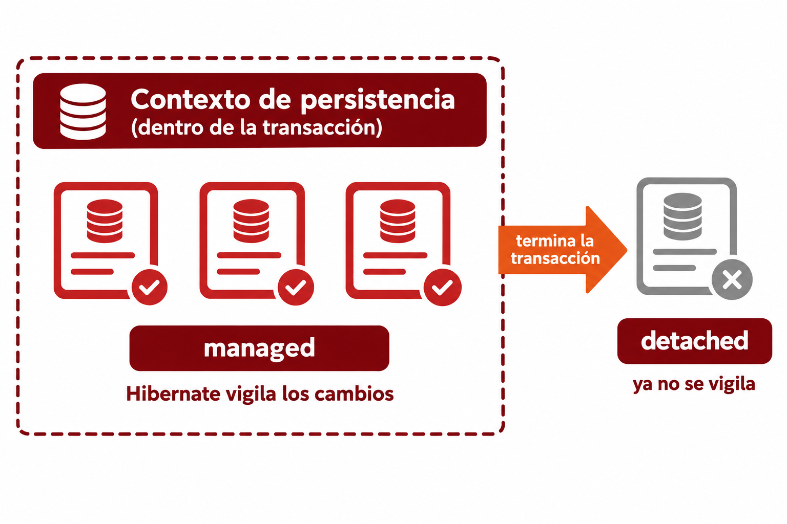

🧩 6. Hibernate a fondo: decisiones de mapeo y ciclo de vida¶
Descarga de diapositivas
Ya sabes qué es un ORM, y por qué existe (lo viste al principio de este tema, con Libro/Editorial) — llevas usando sus anotaciones desde la primera actividad. Toca ahora profundizar en lo que hasta ahora dabas por sentado: que esas anotaciones se podrían haber declarado de una forma completamente distinta, qué estados atraviesa un objeto mientras el ORM lo gestiona, y — ya sobre tu propio proyecto — cómo se instala y configura Hibernate de verdad, y por qué tomaste ciertas decisiones de mapeo (IDENTITY, LAZY, cascade...) que hasta ahora no habías cuestionado.
📐 Clase persistente y formas de declarar el mapeo¶
Una clase persistente (o entidad) es una clase Java cuyos objetos el ORM sabe guardar y recuperar de la base de datos. Existen dos formas históricas de declarar el mapeo entre una clase y una tabla — la que usas tú, y la que la precedió:
| Forma de mapeo | Cómo se declara | Estado hoy |
|---|---|---|
| Fichero XML | Documento aparte (<hibernate-mapping> como raíz, un <class> por entidad, un <property> por campo) |
Legado — apenas se usa en proyectos nuevos |
| Anotaciones | Directamente sobre la propia clase (@Entity, @Column...) |
El que usas tú desde la Actividad 1.1, y el estándar actual |
Las anotaciones ganaron terreno porque viven pegadas al propio código: cambias un campo y su mapeo a la vez, en el mismo fichero, sin mantener sincronizados un .java y un .xml por separado.
🔄 Los estados de un objeto en el ORM¶
Un objeto gestionado por un ORM pasa por distintos estados a lo largo de su vida:
- Transient: objeto Java recién creado, sin relación todavía con la base de datos — Hibernate no sabe que existe.
- Managed (o persistent): Hibernate lo está gestionando activamente — si cambias alguno de sus campos dentro de la transacción, detectará el cambio y lo guardará al finalizar.
- Detached: Hibernate ya no está gestionando el objeto — conserva sus datos, pero los cambios que hagas sobre él ya no se sincronizan automáticamente con la base de datos.
- Removed: marcado para eliminarse de la base de datos.
Estos estados se entienden mejor observando tres situaciones habituales.
Crear una entidad nueva¶
| Java | |
|---|---|
Al utilizar new, el objeto solo existe en la memoria de Java: está en estado transient. Cuando se guarda, Hibernate empieza a gestionarlo y lo inserta en la base de datos.
Conviene recoger siempre el objeto devuelto por save():
| Java | |
|---|---|
Ese objeto contiene el estado definitivo de la entidad, incluido el identificador generado por la base de datos.
Recuperar y modificar una entidad¶
| Java | |
|---|---|
La entidad obtenida mediante findById() está en estado managed mientras dura la transacción. Hibernate detecta el cambio de precio y lo guarda cuando la transacción termina correctamente, aunque no aparezca una nueva llamada a save().
Cuando la transacción finaliza y Hibernate deja de gestionar ese objeto, pasa a estado detached. Conserva todos sus datos, pero los cambios posteriores ya no se sincronizan automáticamente con la base de datos.
Eliminar una entidad¶
| Java | |
|---|---|
Al llamar a delete(), la entidad queda en estado removed: Hibernate la marca para eliminarla de la base de datos al confirmar la transacción.
flowchart LR
T["🆕 Transient<br/>objeto creado con new"] -->|"save()"| M["✅ Managed<br/>Hibernate lo gestiona"]
M -->|"termina la transacción"| D["🔌 Detached<br/>conserva los datos,<br/>pero ya no se sincroniza"]
M -->|"delete()"| R["🗑️ Removed<br/>marcado para eliminar"]En JPA existen operaciones internas distintas para guardar entidades nuevas y entidades que ya existían: persist() y merge(). Spring Data JPA oculta esa diferencia detrás de save(). No necesitas decidir cuál utilizar en cada caso. Para trabajar de forma segura, quédate con dos reglas:
- Si cargas una entidad dentro de una transacción, puedes modificarla y Hibernate detectará los cambios.
- Cuando llames a
save(), utiliza el objeto que devuelve el repository.
¿Cuándo deja de estar managed?
Hibernate mantiene una zona de trabajo en la que controla los objetos que ha cargado o guardado. Esta zona se llama contexto de persistencia.
Mientras un objeto está dentro de ese contexto, permanece managed: Hibernate detecta sus cambios y puede guardarlos automáticamente.
Cuando el contexto termina, el objeto pasa a detached. El objeto Java sigue existiendo y conserva sus datos, pero Hibernate ya no vigila los cambios que hagas sobre él.
Para empezar, quédate con esta idea:
En los métodos anotados con @Transactional, lo habitual es que el objeto permanezca gestionado durante la transacción.

🗄️ Hibernate en un proyecto Spring Boot¶
"Instalar" Hibernate no es un paso manual¶
A diferencia de lo que sugiere la palabra "instalar", en un proyecto Spring Boot no descargas ni configuras Hibernate por separado: viene incluido en la dependencia que ya conoces del Tema 1.
| XML | |
|---|---|
spring-boot-starter-data-jpa trae Hibernate como implementación de JPA por defecto, además de Spring Data JPA. Con solo esa dependencia (que ya tienes en tu pom.xml desde la Actividad 1.1), Hibernate está "instalado y configurado" en lo esencial.
Decisiones de mapeo que ya has tomado, explicadas¶
Tu Videojuego y tu Estudio de la Actividad 1.1 ya llevan varias anotaciones concretas — las has escrito siguiendo el patrón de la teoría, sin que se justificara todavía cada elección. Toca cerrar ese hueco.
GenerationType.IDENTITY, ¿por qué esa estrategia?¶
GenerationType tiene cinco valores. Todos resuelven el mismo problema —generar un identificador único—, pero lo hacen de formas diferentes:
| Estrategia | Cómo genera el id | Cuándo conviene |
|---|---|---|
IDENTITY |
Delega en una columna autoincremental de la propia base de datos. | Es la que utilizas en Videojuego y Estudio, cuyos identificadores son números Long. |
SEQUENCE |
Utiliza una secuencia de la base de datos que Hibernate puede consultar antes de insertar. | Cuando necesitas reservar identificadores por adelantado. |
TABLE |
Simula una secuencia mediante una tabla auxiliar gestionada por Hibernate. | Cuando el gestor no dispone de columnas identity ni secuencias. |
UUID |
Genera un identificador UUID, como 550e8400-e29b-41d4-a716-446655440000. |
Cuando interesa generar identificadores únicos sin depender de una secuencia numérica central. |
AUTO |
Deja que Hibernate elija la estrategia más adecuada según el tipo del identificador y el gestor utilizado. | Cuando prefieres delegar la elección en el ORM. |
En este proyecto continuarás utilizando IDENTITY, porque tus entidades tienen un identificador numérico Long y PostgreSQL puede generarlo automáticamente. UUID es otra posibilidad útil, pero requeriría declarar el identificador con el tipo UUID:
TABLE, en concreto: así es la tabla auxiliar que crea Hibernate
TABLE es una de las estrategias más difíciles de visualizar, porque no usa ninguna función nativa del motor — Hibernate crea una tabla normal y corriente, con una fila por cada entidad que la use, y cada vez que necesita un id nuevo hace, dentro de una transacción, un SELECT para leer el valor actual y un UPDATE para incrementarlo:
Es literalmente lo mismo que hace SEQUENCE por dentro — la diferencia es que SEQUENCE es un objeto del motor, optimizado por el propio PostgreSQL para que muchas inserciones a la vez no se bloqueen entre sí; TABLE es una tabla corriente, y ese SELECT/UPDATE se bloquea como cualquier otra fila. Con pocas inserciones no se nota, pero con muchas simultáneas se convierte en un cuello de botella — de ahí que normalmente sea la estrategia menos eficiente.
@Column(precision, scale), y por qué importa en una columna de dinero¶
Para guardar dinero tenías, en realidad, tres alternativas — no solo "poner precision/scale o no":
| Alternativa | Cómo funciona | Por qué no se usó (o sí) |
|---|---|---|
BigDecimal sin precision/scale |
Hibernate elige un tipo de columna genérico, sin límite exacto de decimales | Deja que el motor decida el tipo — puede admitir más decimales de los que tiene sentido para un precio |
BigDecimal con precision/scale (la elegida) |
Tú fijas exactamente cuántos dígitos y decimales admite la columna | Precisión explícita y controlada, sin depender del valor por defecto del motor |
Entero en céntimos (Long precioEnCentimos) |
El dinero se guarda como un entero (250099 = 2500,99€), sin ningún decimal que redondear | Elimina el problema de raíz, a cambio de tener que multiplicar/dividir por 100 en cada conversión a euros — más código, menos intuitivo de leer |
Puedes comprobar la diferencia entre las dos primeras tú mismo: quita temporalmente @Column(precision = 10, scale = 2) de precio, borra la tabla y reinicia con show-sql: true activo — verás que el create table genera un tipo de columna distinto (sin la precisión exacta que sí tenía antes). En una columna que guarda dinero, esa precisión no es un detalle decorativo: sin ella, el cálculo podría dejar más decimales de los que tiene sentido guardar.
FetchType.LAZY frente a EAGER, en número real de consultas¶
Puedes comprobarlo activando el log de SQL (logging.level.org.hibernate.SQL: DEBUG) y contando cuántas consultas distintas aparecen al llamar a GET /api/v1/videojuegos:
sequenceDiagram
participant C as Cliente
participant S as VideojuegoService
participant DB as PostgreSQL
Note over C,DB: LAZY (la que ya tienes en Videojuego.estudio)
C->>S: GET /videojuegos
S->>DB: SELECT * FROM videojuego
Note over S: El Estudio asociado NO se pide<br/>hasta que se llama a getEstudio()
Note over C,DB: EAGER
C->>S: GET /videojuegos
S->>DB: SELECT videojuego + JOIN/consulta extra por estudio
Note over S: El Estudio se trae siempre,<br/>se use o no en esa peticiónCon LAZY, Hibernate no trae el Estudio asociado hasta que de verdad lo pides. Con EAGER, lo trae siempre en la misma consulta o en una adicional inmediata — más consultas (o joins más pesados) por cada petición, incluso cuando el cliente nunca llega a mirar ese dato.
cascade/orphanRemoval, y qué otras opciones había¶
CascadeType.ALL no es la única opción — es, de hecho, un atajo que combina otras cinco por separado. Podrías haber elegido propagar solo algunas operaciones, o ninguna:
Valor de cascade |
Qué propaga de Estudio hacia sus Videojuego |
|---|---|
(sin cascade) |
Nada — cada operación sobre un Videojuego la harías tú mismo, uno a uno |
PERSIST |
Guardar el Estudio guarda también los videojuegos nuevos que le hayas añadido |
MERGE |
Actualizar el Estudio sincroniza también los cambios de sus videojuegos ya existentes |
REMOVE |
Borrar el Estudio borra también todos sus videojuegos |
REFRESH / DETACH |
Recargar o desvincular el Estudio hace lo mismo con sus videojuegos |
ALL (la elegida) |
Las cinco anteriores combinadas, en una sola palabra |
Con tu configuración actual (cascade = CascadeType.ALL, orphanRemoval = true en Estudio.videojuegos), borrar un estudio borra en cascada sus videojuegos. Pero podrías haber elegido, por ejemplo, cascade = {PERSIST, MERGE} sin REMOVE: guardar y actualizar se propagarían igual, pero borrar un Estudio con videojuegos asociados fallaría por la clave foránea — obligándote a decidir explícitamente qué hacer con ellos, en vez de arrastrarlos en silencio. Se eligió ALL porque, en este proyecto, un videojuego sin su estudio no tiene sentido de negocio: no hay ningún caso en que interese conservarlo huérfano.
orphanRemoval es una decisión aparte, binaria — true (la elegida) o false (el valor por defecto si no lo escribes):
Si orphanRemoval es... |
Qué pasa al quitar un Videojuego de la lista videojuegos (sin borrar el Estudio) |
|---|---|
true (la elegida) |
Hibernate lo detecta como huérfano y lo elimina de la base de datos por su cuenta |
false (por defecto) |
El videojuego se queda en la base de datos, sin ningún Estudio que lo referencie desde la lista |
orphanRemoval = true se utiliza cuando el objeto hijo no tiene sentido por separado: si deja de pertenecer al objeto padre, también debe desaparecer de la base de datos.
La cascada se declara en el lado Estudio → Videojuego (el lado "uno" de la relación) porque no tendría sentido al revés: borrar un solo videojuego no debería llevarse por delante el estudio entero.
Configuración avanzada: cuando el mapeo no es directo¶
Hibernate necesita, a veces, ayuda extra para mapear tipos que no tienen una correspondencia directa con una columna estándar — por ejemplo, si quisieras guardar cifrado el contenido de un campo, o dar formato propio a un tipo que Hibernate no reconoce de fábrica. Esa ayuda se declara con un @Converter (una clase que implementa AttributeConverter, indicándole a Hibernate cómo convertir ese tipo concreto hacia y desde la columna) — no necesitas escribir uno todavía; basta con saber que, cuando el mapeo automático no llega, es exactamente ahí donde se completa.
ddl-auto: configuración del ORM, no del conector¶
Ya has usado spring.jpa.hibernate.ddl-auto: update desde la Actividad 1.1, pero desde el ángulo de "cómo se crea la tabla". Con la distinción entre conector y ORM que ya conoces, es el momento de precisarlo: la conexión (usuario, contraseña, URL) es configuración del conector; qué hace Hibernate con las entidades que declaras (crear tablas, validarlas, no tocar nada) es configuración del ORM — y vive en esa misma propiedad, ddl-auto.
ddl-auto no es la única propiedad de configuración del ORM — estas son las que más vas a usar:
| Propiedad | Qué controla |
|---|---|
spring.jpa.hibernate.ddl-auto |
Si Hibernate crea, actualiza o solo valida las tablas al arrancar. |
spring.jpa.show-sql |
Si Hibernate imprime en consola el SQL real que ejecuta por debajo (ya la has usado en la Actividad 1.1, sin que se explicara todavía qué hacía). |
spring.jpa.properties.hibernate.format_sql |
Si ese SQL impreso se formatea legible, en varias líneas, en vez de aparecer todo seguido. |
El otro lado de lo automático: data.sql
ddl-auto se ocupa de la estructura de la base de datos: crea o actualiza las tablas a partir de las entidades. Para introducir datos iniciales puedes crear un fichero:
| Text Only | |
|---|---|
Dentro se escriben sentencias INSERT normales:
| SQL | |
|---|---|
Como el proyecto utiliza PostgreSQL y las tablas las prepara Hibernate, debes añadir estas propiedades en application-dev.yml:
| YAML | |
|---|---|
Cada propiedad cumple una función:
spring.sql.init.mode: alwayshace que Spring Boot ejecutedata.sqltambién con PostgreSQL.spring.jpa.defer-datasource-initialization: trueespera a que Hibernate haya preparado las tablas antes de ejecutar losINSERT.
De esta manera, el orden de arranque será:
| Text Only | |
|---|---|
En la Actividad 1.5 utilizarás este mecanismo para disponer rápidamente de suficientes datos con los que probar la paginación.
Ten en cuenta que data.sql se ejecuta cada vez que arranca la aplicación. Los datos del fichero deben estar preparados para no provocar errores por insertar varias veces los mismos registros.
✅ Ideas clave¶
Abrir resumen
- El mapeo se declara con anotaciones sobre la propia entidad (el XML de mapeo, con
<class>/<property>, es el enfoque legado). - Los estados de un objeto en el ORM: transient (sin relación con la BD) → managed (gestionado, se sincroniza solo) → detached (ya no se sincroniza) / removed (marcado para borrar).
- "Instalar" Hibernate en Spring Boot es, en la práctica, añadir
spring-boot-starter-data-jpa. IDENTITYdelega la generación del id en la propia base de datos;SEQUENCEpermite reservar ids por adelantado.precision/scalefijan el tipo exacto de columna (importa en dinero).LAZYdifiere la carga de una relación hasta que se pide de verdad;EAGERla trae siempre.cascade/orphanRemovalpropagan borrados y limpian huérfanos automáticamente.ddl-autoes configuración del ORM (qué hace Hibernate con tus entidades), distinta de la configuración del conector (cómo se conecta);show-sql/format_sqlmuestran el SQL real generado.ddl-autopermite que Hibernate prepare las tablas. Para ejecutar después undata.sqlsobre PostgreSQL se utilizanspring.sql.init.mode: alwaysyspring.jpa.defer-datasource-initialization: true.